외장 하우징 · 후면 원판
제품의 외형을 구성하고 원판 인터랙션을 구현하는 외장 구조.
Before words,
there is hum...
지나치던 소리에 귀 기울이고
오늘의 소리를 나만의 형태로 남깁니다.
이동 과정에서 스마트폰 을 사용
90 %
이동은 주변 환경을 경험할 수 있는 시간이지만,
대부분의 사람들은 이동 중에도 스마트폰을 통해 또 다른 디지털 콘텐츠를 소비합니다.
01 / FROM SOUND TO HUM
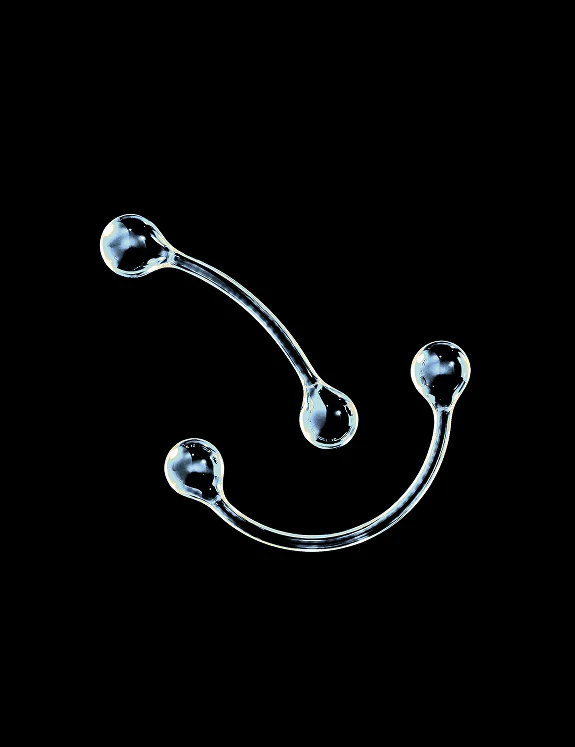
감각적 채집
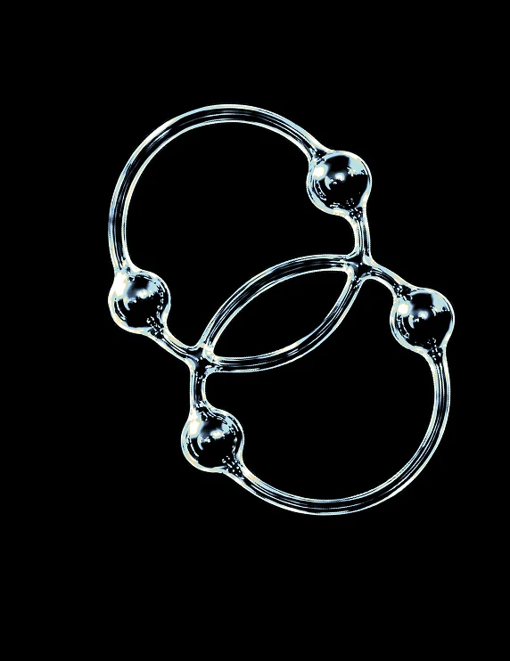
귀 기울이는 기대감
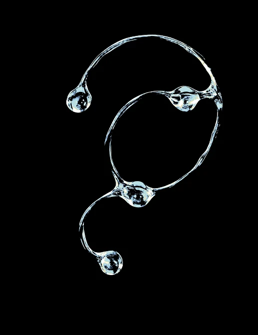
일상의 아카이브
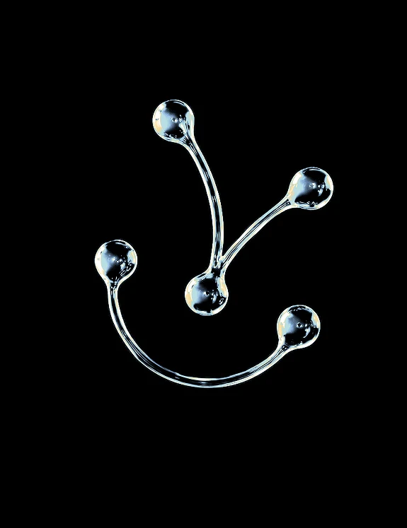
감각의 확장
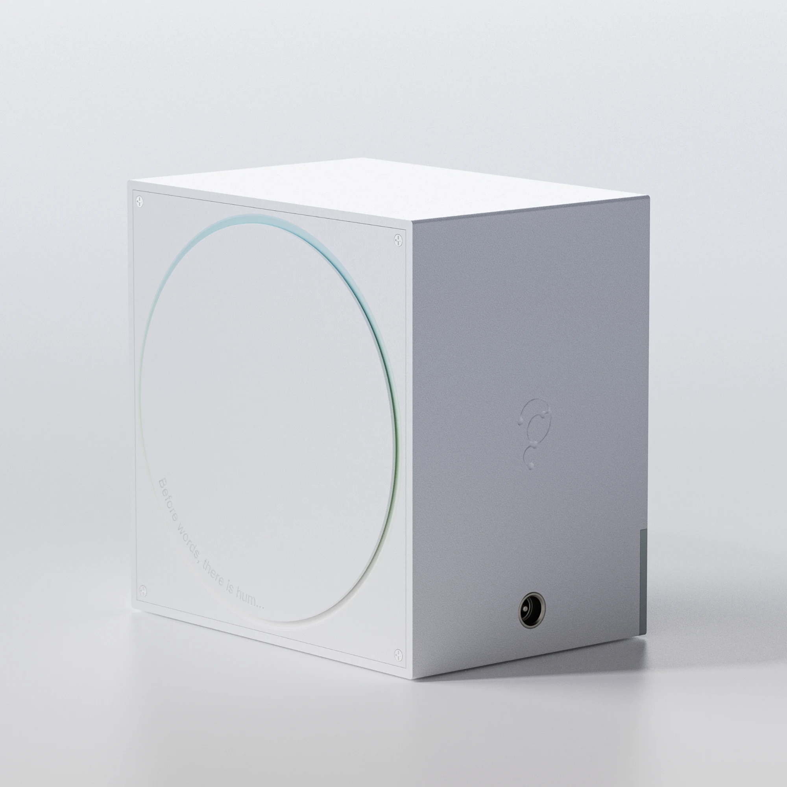
02 / FROM SOUNDWALK TO HUM
HUM은 소리를 받아들이는 ‘귀’와 세상으로 연결되는 ‘틈’을 하나의 형태로 담았습니다.
원판을 여는 직관적인 움직임을 통해 주변의 소리에 자연스럽게 귀 기울이고 기록을
시작합니다.
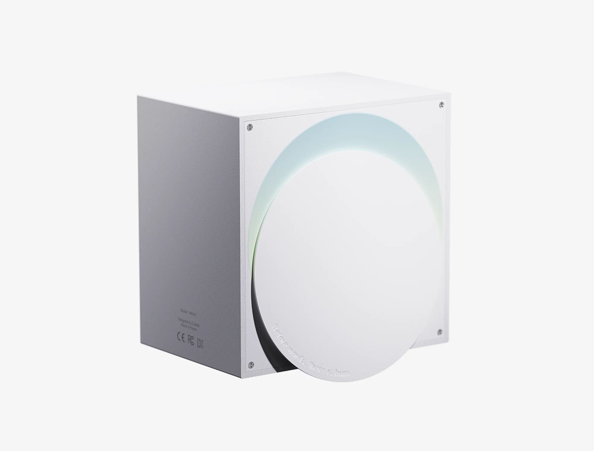
01 / RECORDING ON
원판을 열면 주변의 소리를 채집하는 순간이 시작됩니다.
화면 대신 지금 머무는 공간을 바라보세요.
제품의 개폐 동작을 보여주는 디자인 미리보기입니다.
HUM / CMFP
가까이서 보는 HUM의 디자인.
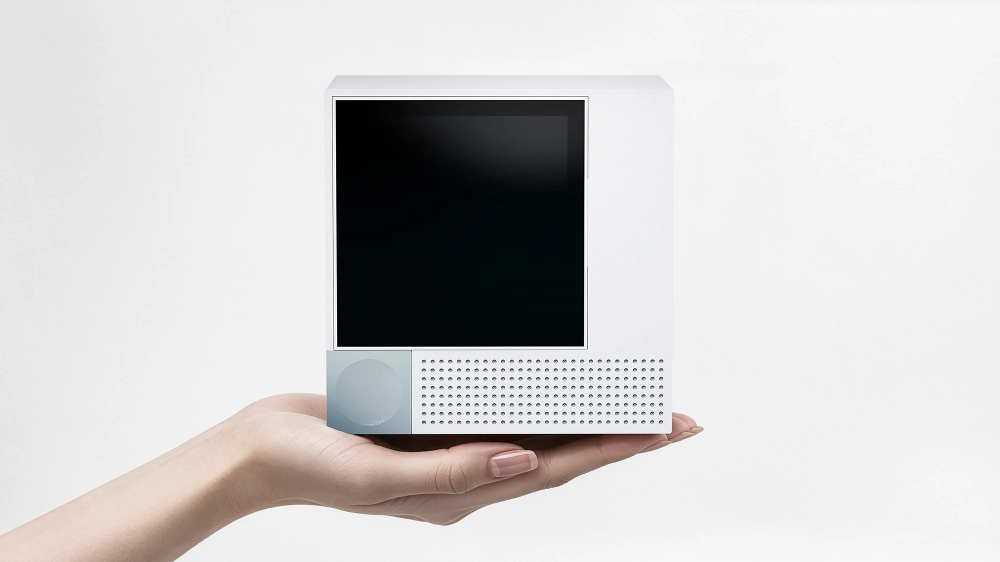
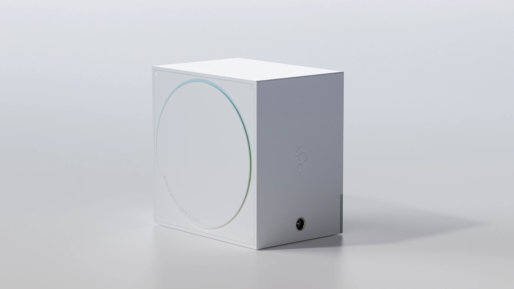
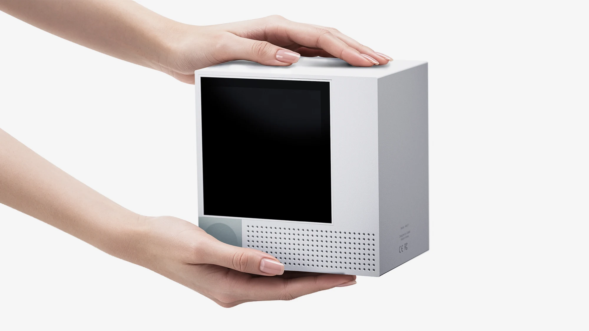
제품의 형태와 사용 장면을 보여주는 디자인 이미지입니다. HUM은 시제품 개발 중입니다.
겉으로 보이는 형태부터 안쪽의 부품까지.
HUM을 이루는 구조를 펼쳐 봅니다.
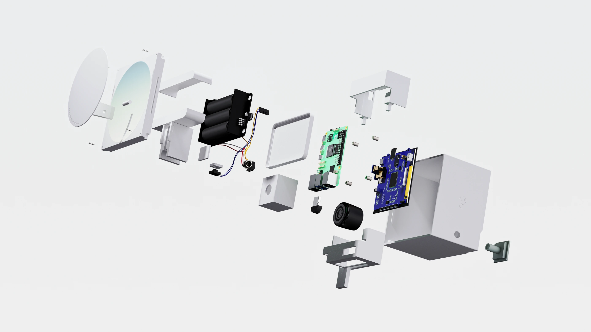
제품의 외형을 구성하고 원판 인터랙션을 구현하는 외장 구조.
각 하드웨어 부품을 정해진 위치에 배치하고 고정하는 지지 구조.
제품 구동에 필요한 전력을 공급하는 배터리 및 전원 구성.
소리의 녹음·분석과 디스플레이 출력을 처리하는 메인 제어 보드.
채집한 소리를 기반으로 생성된 그래픽을 보여주는 출력 화면.
주변의 소리를 입력받고 저장된 사운드를 재생하는 오디오 구성.
제공된 제품 구성도에 보이는 주요 요소를 기준으로 한 디자인 안내입니다. 세부 부품과 사양은 개발 과정에서 변경될 수 있습니다.
HUM / THE CAMPAIGN — 2026
FROM PERSONAL TO SHARED
HUM은 일상의 발견을 소리로 남겨 나만의 형태로 기록하고,
그 기록을 서로 나누며 감각의 경험을 연결합니다.
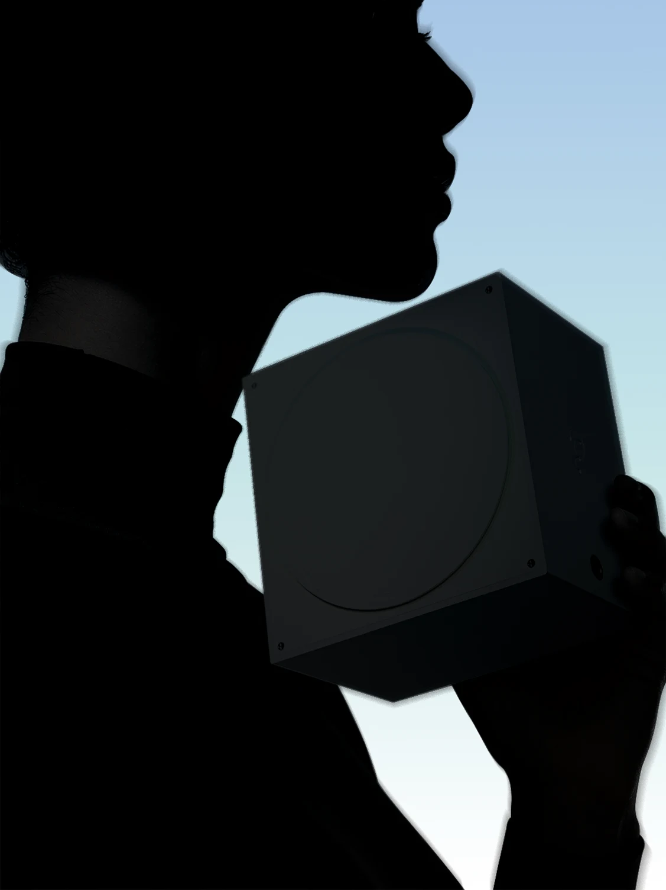
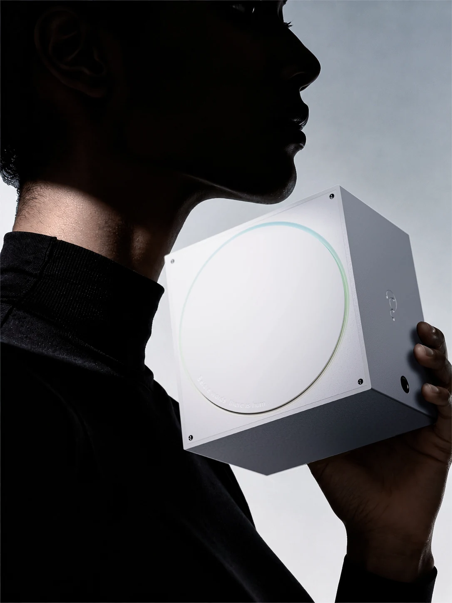
나만의 소리를
기록하다
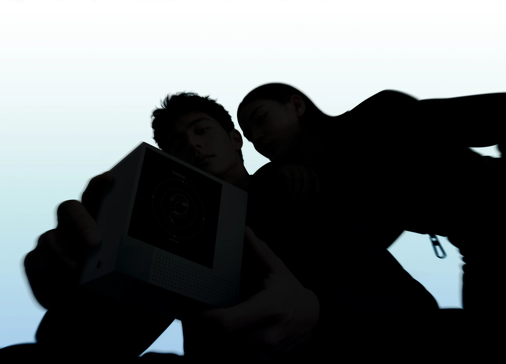
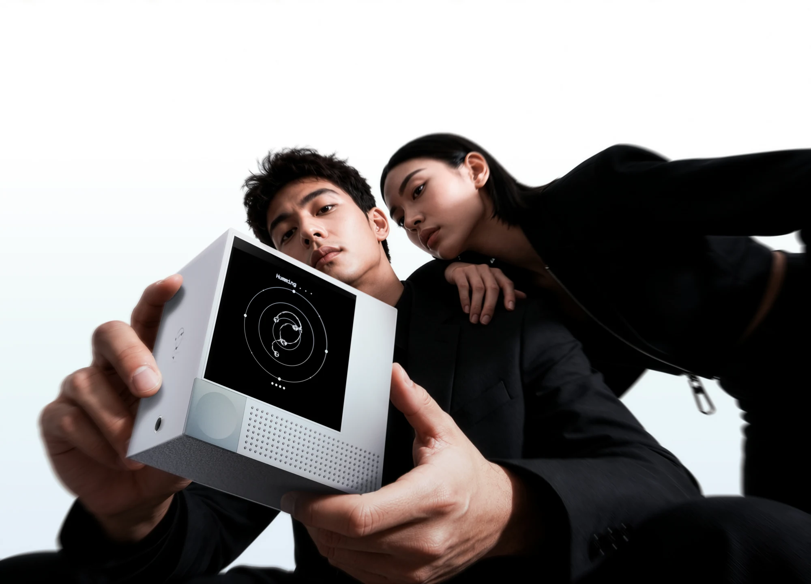
서로의 소리를
나누다
더 많이 기록하기보다,
한 번 더 느끼기.
하루의 소리 하나를 골라 그때의 마음과 함께 남겨보세요.
COLLECT
마음이 머무는 순간,
HUM을 열어 주변의 소리를 담습니다.
CHOOSE
하루에 하나의 소리를 선택하고,
그 순간 느꼈던 감정을 남깁니다.
PRESERVE
소리의 특징을 담은 아트워크로 지나간 순간을 다시 마주합니다.
당신의 호기심으로 완성되는 형태
여섯 개의 조각,
열다섯 가지 만남.
두 조각을 골라 HUM의 그래픽이
서로 연결되는 순간을 만나보세요.
두 조각을 골라보세요. 새 조각을 누르면
먼저 선택한 조각이 바뀝니다.
B1과 C1이 만나고 있어요.
HUM 그래픽 원본을 활용한 시각 체험입니다.
실제 소리를 녹음하거나 분석하지 않습니다.
들었던 순간을,
바라볼 수 있도록.
HUM은 소리의 크기와 높낮이,
장소와 시간에 따라 그래픽이 달라지는 경험을 설계합니다. 연동 앱에서는
날짜·감정·장소별로 아트워크를 모아 보고,
채집한 순간을 돌아볼 수 있도록 준비하고 있습니다.
HUM이 그리는 다음 풍경
골목,
통학로,
정류장,
공원.
우리가 실제로 살아가는 곳의 소리가 모이면,
더 나은 음환경을 이해하는 단서가 됩니다.
HUM은 개인의 감각 기록이 시민 참여형 음환경 데이터로 이어지는 구조를 구상합니다.
사용자가 동의한 익명 데이터를 모아,
지자체의 소음 관리와 도시계획을 돕는 것이 목표입니다.
공공 데이터 연계는 개발 구상입니다. 사용자 동의,
기기 내 음성 구간 보호,
격자 단위 위치 처리,
음향 특징값 전송을 설계 원칙으로 삼고 있습니다.
주변의 소리를 채집하는 디바이스와 개인 아카이브를 위한 연동 앱을 함께 설계하는
프로젝트입니다. 소리를 수치나 녹음 파일로만 남기는 데서 나아가,
일상의 감각을 시각적 아트워크로 간직하는 경험을 제안합니다.
제공된 기획서 기준으로 브랜드,
제품 구조,
사용자 경험 설계를 마치고 시제품을 제작 중입니다. 출시 일정과 판매 가격은 아직 이
페이지에서 안내하지 않습니다.
소리의 크기와 주파수,
장소 등 여러 특성에 따라 여섯 개의 그래픽 조각을 조합하는 방식으로 설계하고
있습니다. 시간대의 색과 사용자가 남긴 감정까지 반영해 각 순간에 다른 형태를 만드는
것이 목표입니다.
기획안에서는 사용자가 동의한 경우에만 공공 데이터 제공에 참여하는 방식을 채택하고
있습니다. 사람 목소리 구간 보호,
위치 격자화,
원본 대신 음향 특징값 전송을 계획하며,
실제 운영 정책은 개발 과정에서 구체화할 예정입니다.
HUM을 만드는 회사,
code&
code&는 HUM을 통해 일상의 소리와 사람을 연결합니다. 주변에 귀 기울이는 작은
행동이,
개인의 기록을 넘어 우리가 사는 환경을 이해하는 경험이 되도록.
HUM을 함께 만드는 사람들
소프트웨어,
디자인,
전자공학.
여섯 명의 시선으로 일상의 소리를 탐구합니다.
소프트웨어융합학과
jeachim3@khu.ac.kr소프트웨어융합학과
gpdls0411@khu.ac.kr산업디자인학과
jungsoyun21@gmail.com시각디자인학과
wkdthdud130@gmail.com전자공학과
wnndud17@khu.ac.kr전자공학과
yjyjing@naver.com
프로필 사진은 실제 팀원과 무관한 AI 생성 임시 이미지이며,
이메일은 교체 예정인 예시 주소입니다.
OPEN. LISTEN. WONDER!